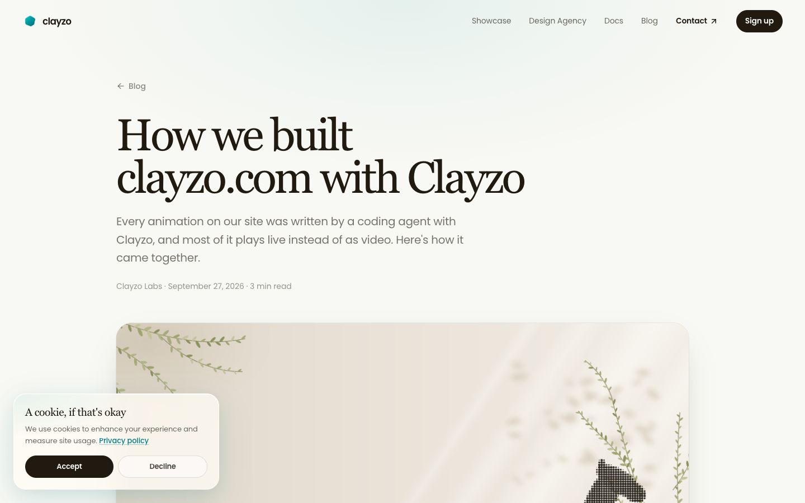
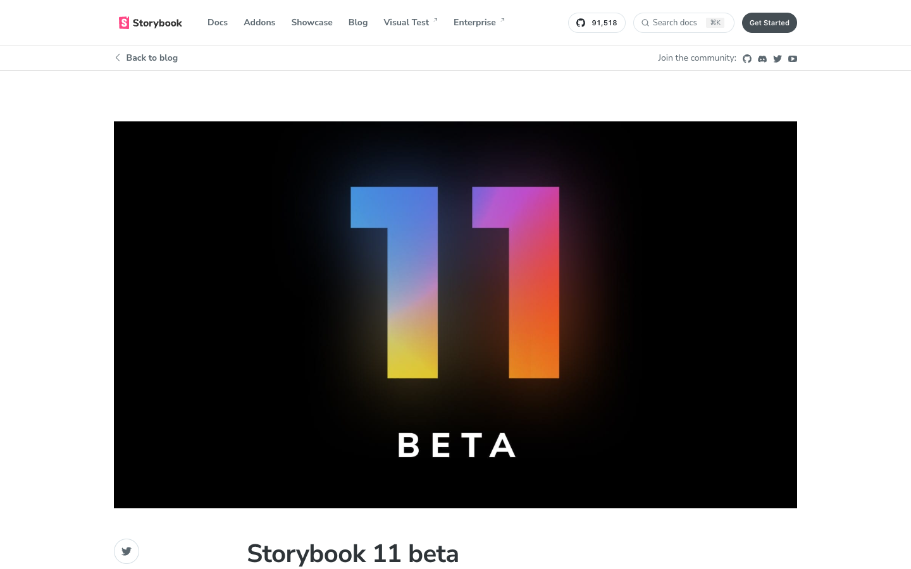
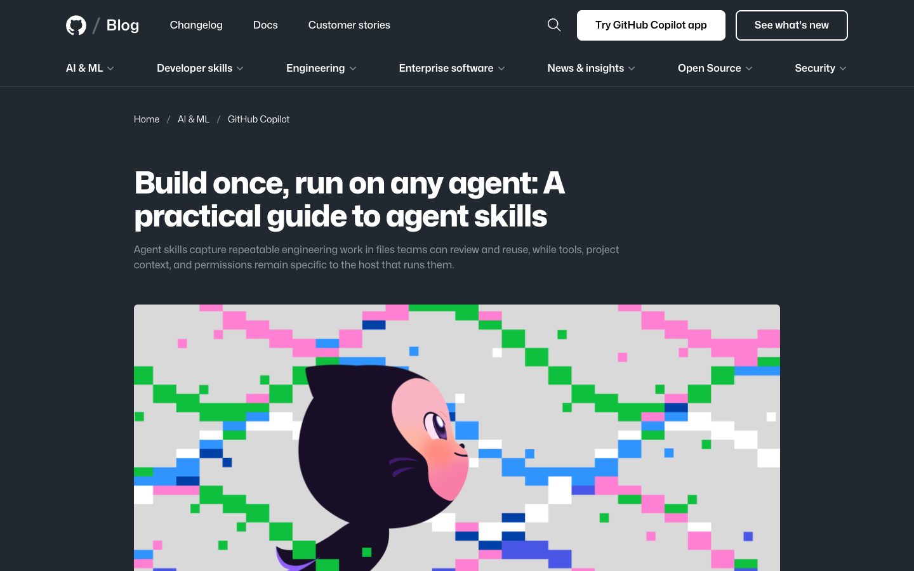
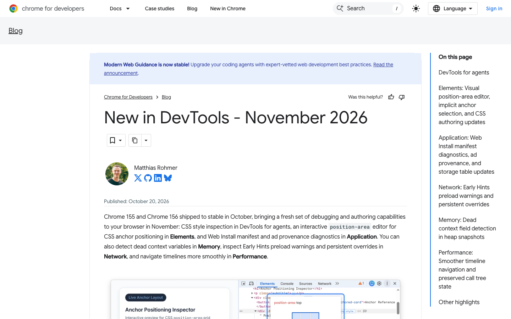
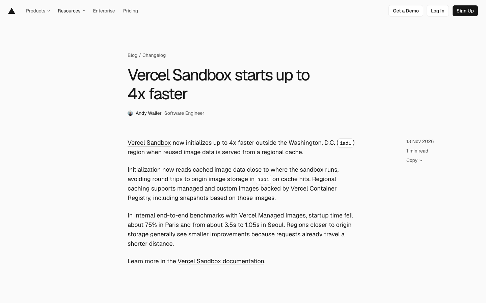
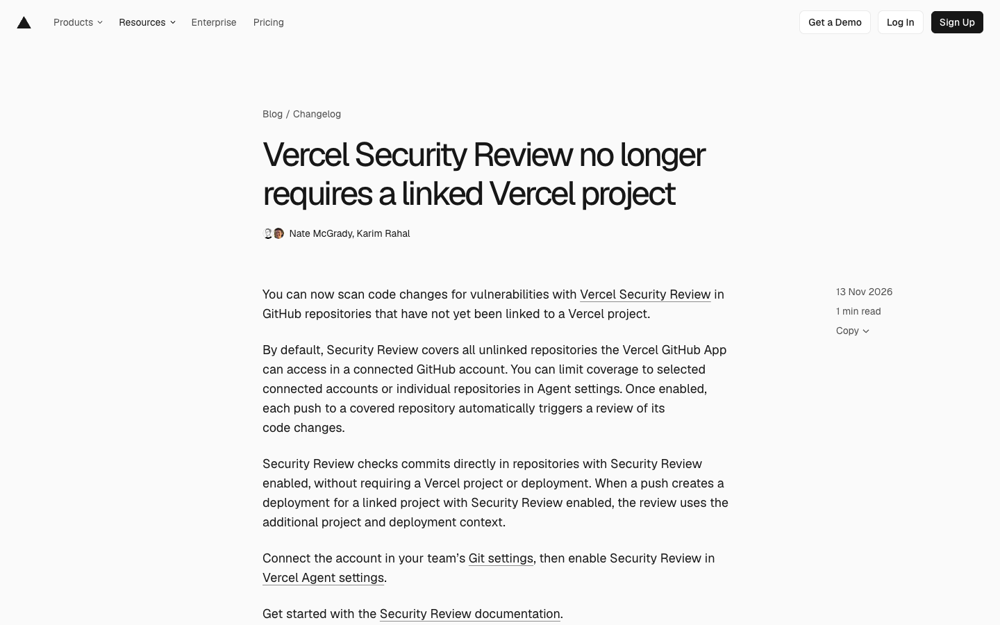
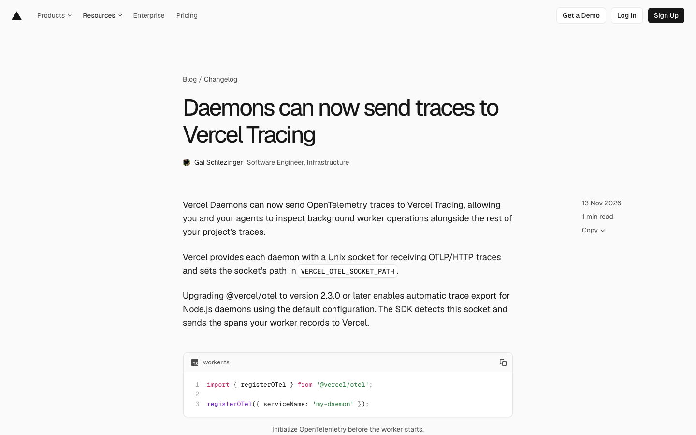
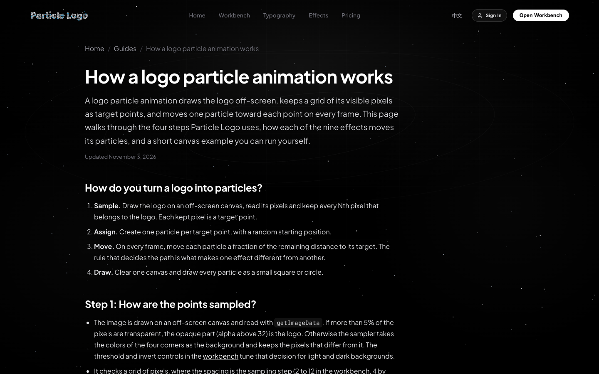
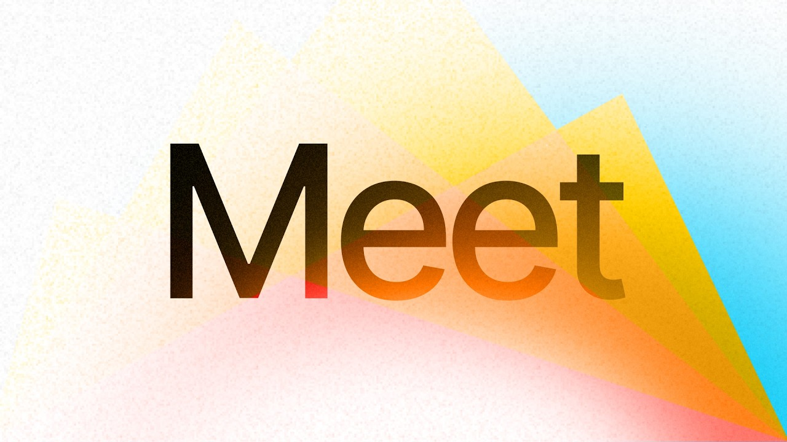

今天没有硬凑“周末大新闻”。真正连成一条线的，是 Clayzo、Storybook、GitHub、Chrome DevTools 和 Vercel 都在补 agent 交付后的检查面：逐帧看、跑组件测试、声明权限、读 trace、把安全审查留在代码库里。
生成不再是最稀缺的一步，谁能把结果变成可版本化、可回读、可回滚的团队资产，谁才有资格进生产。设计团队接下来该少存一点神奇 prompt，多存一点验收规则、失败样本和运行账本。

Clayzo 是一个免费的 coding-agent 动画引擎，安装入口是 npx clayzo@latest init。动画以代码和文本文件存在，agent 可以渲染单帧、contact sheet 和循环接缝，再交付 live web scene 或原生 Swift；官方复盘里，clayzo.com 的 13 段动画合计约 2.0MB，其中一段 MP4 是 1.48MB，同一 live scene 只有 34KB。
这比“让 AI 再出一版 motion”靠谱：每个参数能 diff，坏帧能定位，上一版能回滚，前端也不用把交互退化成视频。还没把它接进真实项目实测，先不替免费工具宣布生产可用；但逐帧 QA 和源文件进 Git 这套工作方式，已经比多数 AI 动效 demo 成熟。

Storybook 11 beta 增加官方 Agent Skills、Claude / Codex 插件和 headless CLI，让 agent 能启动 Storybook、检索 story、运行功能与无障碍测试，再把浏览器结果交回审查。官方称相较 v10 包体小约 25%，agent context 最多快 10 倍；升级门槛也写得很清楚：Node.js 22.12+、TypeScript 5.9+。
关键不是“AI 会看组件”，而是组件库终于能充当一份可执行合同。Beta 阶段别全库升级，挑一组交互密、状态多的业务组件跑迁移，把 story 缺口、a11y 失败和 context 消耗一起记下来，再判断这套 agent 工作流是不是省时间。

GitHub 这篇实操指南把 portability 的边界说透了：skill 可以共享指令和工作流，但工具、凭证、权限与运行环境仍属于宿主。稳定配置应进 manifest，敏感或破坏性动作要有检查与人工确认；如果能力需要共享状态、长期运行、独立权限和审计轨迹，就该做 app，不要继续把所有东西塞进 prompt。
这条分界线对设计工程很实用。命名规则、截图验收、token lint 可以做 skill；发布生产、改设计系统主分支、触碰付费 API，则应该升成有身份和审计的服务。所谓“一次编写到处运行”，最多复用意图，绝不等于到处拥有同样权限。

Chrome DevTools 这轮把几件原本分散的检查收回工具里：agent 能读取页面和 CSS，position-area 有可视化编辑器；Performance trace 分块解析，缓冲上限到 1.2GB；可访问性面板补 APCA 建议，性能分析还能按 CPU tier 看设备差异，Local Overrides 也会持续保留。
这不等于把浏览器交给 agent 就能自动验收。更合理的做法是让它先定位异常，再把布局、性能、APCA 和低端设备结果留下来；没有截图、trace 与复现步骤的“已修复”，仍然只是一句聊天记录。

Vercel Sandbox 增加区域缓存，官方内部基准里巴黎冷启动最多快 75%，首尔从 3.5 秒降到 1.05 秒。它直接改善 agent 每轮拉起临时环境的等待，但这组数字不是 SLA，也不代表每个区域、依赖组合和镜像都能复现。
对前端原型最实际的影响，是可以把“每次改动都开一间干净沙箱”从奢侈动作变成常规检查。先记录自己仓库的 p50 / p95、首次安装和重复启动，别拿官网峰值替代内部基线。

Security Review 现在能直接覆盖未绑定 Vercel 项目的 GitHub 仓库，默认范围是 Vercel GitHub App 可访问的仓库，也能按 connected account 或 repository 收紧；代码 push 后会触发 review。只有绑定项目时，检查才额外拿到 deployment 与项目上下文。
这把安全检查从部署平台功能挪近代码入口，设计系统、组件库和静态官网也能进同一条审查线。代价是 GitHub App 的访问面更值得盯：先把仓库白名单收窄，再谈“默认全开”，否则方便是建立在权限膨胀上。

Vercel Daemons 现在能把 OpenTelemetry trace 送进 Vercel Tracing，需要 @vercel/otel 2.3.0+，数据通过 Unix socket 进入平台；CLI 还能按 service 查询并输出 JSON。后台 worker、长任务和 agent loop 不必再只靠日志猜它卡在哪一步。
界面快不快只是表面，真正难查的是一次生成跨了多少服务、在哪次重试里变慢、哪条任务没收尾。把 daemon trace 和前端 request 放进同一条链路后，产品团队才有机会把“偶尔很慢”拆成可定位的系统问题。

Particle Logo 的指南把 logo 粒子化拆成一条很干净的 Canvas 2D 管线：从图片取样像素，给每个粒子保存目标点，再用逐帧缓动把随机起点拉回轮廓；官方提供 HTML、Vue 和 React 接入，核心不依赖动画库，导出示例最多到 1,600 个粒子。
它适合做 hero 或品牌状态过渡，不适合被复制成每个落地页的开场。真正该拿走的是性能边界：根据 DPR 和视口控制粒子数，prefers-reduced-motion 直接给静态 logo，动画结束后停掉循环；否则一段“很轻的 Canvas”会安静地占着整页电量。

视频：YouTube 原片https://www.youtube.com/watch?v=_2-DrtdMtos｜产品：Snowfirehttps://www.snowfire.ai/｜制作：ObiN Studio｜片长：约 86 秒
Snowfire 把自己定位成企业的 “AI brain”，官网写明支持 1,000+ connectors、约 24 小时给出 first look，并提供 cloud、VPC 与 on-prem 部署；价格只标 enterprise，没有公开数字。片子没有拿一个会说话的聊天框撑全场，而是从 spreadsheet sprawl 开始，把散落的数据卡、业务日志和流程面板一层层收进同一个决策系统。
视觉上最聪明的是明暗两套世界。白底段落用细线、表格和青绿色状态点解释输入，暗色段落用蓝紫渐变、倾斜 UI 面板和切面钻石放大“持续工作”的能力；Snowfire 的多色晶体既是 logo，也是穿过数据层的转场铰链。抽帧看，字体始终比 3D 更先到位，镜头再炫也不会让产品名和结果数字掉出阅读顺序。
这类 AI SaaS 片最容易犯的错，是把粒子、网格和悬浮卡片当成能力本身。Snowfire 至少用一条明确因果线把它们管住：数据散乱 → 系统接入 → 持续判断 → 结果回到业务。下一支片可以先画这四格 storyboard，再规定每种转场只回答一个问题；如果某个镜头既不推进因果，也没给界面留阅读时间，就删掉，而不是再加一层光。
飞书发布使用 https://www.youtube.com/embed/_2-DrtdMtos 的 iframe；本地原片已通过 YouTube HTML5 player 回放，并按 8 秒间隔抽取 8 帧检查，不使用单独视频封面块。
Stash 首页与 WordPress API 自 11 月 13 日起没有新增文章。今天不把旧 feed 冒充新消息，保留五条最近信号和覆盖状态，等新 breakdown 再升级。
_2-DrtdMtos；86 秒原片可回放，8 帧抽样已目视检查，飞书使用 YouTube iframe。核验说明：Clayzo、Storybook、GitHub Blog、Chrome for Developers、Vercel Changelog、Particle Logo、Snowfire 官网、YouTube 原片、Stash 首页 / WordPress API 于 2026-11-15 回读。正文 9 张配图原始宽度为 1280–1440px，已逐张目视检查；飞书文档、YouTube iframe 与群消息状态以最终 CLI 回读为准。